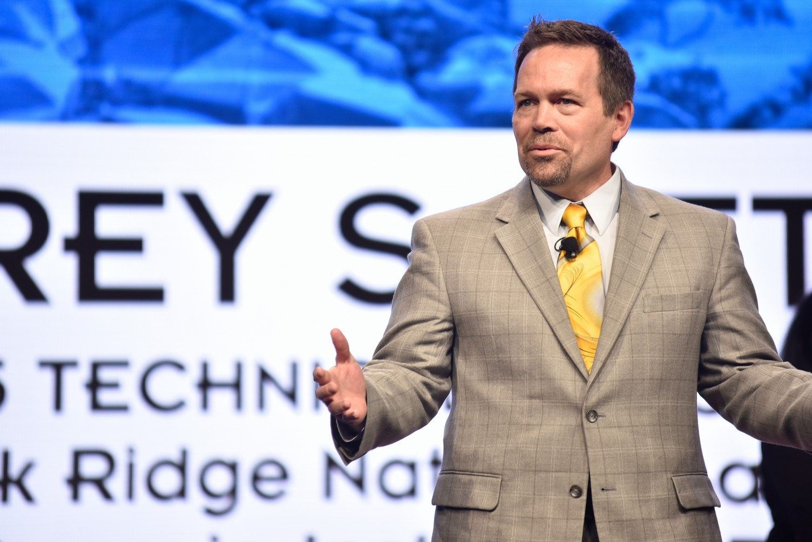

|
Organization |
Corporate Fellow |
|
 |
|
Address |
One Bethel Valley Road (Map) |
||
|
Office |
|||
|
Phone |
+1 865-356-1649 |
||
|
|
|||
|
URL |
|||
|
ORCID |
 https://orcid.org/0000-0002-2449-6720
https://orcid.org/0000-0002-2449-6720Bio


Jeffrey S. Vetter, Ph.D., is a Corporate Fellow at Oak Ridge National Laboratory (ORNL). At ORNL, he is currently the Section Head for Advanced Computer Systems Research and the founding director of the Experimental Computing Laboratory (ExCL). Previously, Vetter was the founding group leader of the Future Technologies Group in the Computer Science and Mathematics Division from 2003 until 2020. From 2016 until 2020, Vetter held a joint appointment at the Electrical Engineering and Computer Science Department of the University of Tennessee-Knoxville. From 2005 through 2015, Vetter was a Joint Faculty Professor at Georgia Institute of Technology. At GT, from 2009 to 2015, Vetter was the Principal Investigator of the NSF Track 2D Experimental Computing XSEDE Facility, named Keeneland, for large scale heterogeneous computing using graphics processors, and the Director of the NVIDIA CUDA Center of Excellence.
Vetter earned his Ph.D. in Computer Science from the Georgia Institute of Technology. He joined ORNL in 2003, after stints as a computer scientist and project leader at Lawrence Livermore National Laboratory, and postdoctoral researcher at the University of Illinois at Urbana-Champaign. The coherent thread through his research is developing rich architectures and software systems that solve important, real-world high-performance computing problems. Recently, his team has been investigating the effectiveness of radically diverse architectures, including deep memory hierarchies with non-volatile memory, and heterogeneous processors such as GPUs, SoCs, and field-programmable gate arrays (FPGAs), for important HPC and streaming applications. In fact, he helped to coin the term Extreme Heterogeneity.
Vetter is a Fellow of the IEEE and AAAS, and a Distinguished Scientist Member of the ACM. In 2018, Vetter was awarded the ORNL Director's Award for Outstanding Individual Accomplishment in Science and Technology. In 2010, as part of an interdisciplinary team from Georgia Tech, NYU, and ORNL, Vetter was awarded the Gordon Bell Prize . In 2020, along with a large team from IBM and LLNL, Vetter received the SC20 Test of Time Award for the paper from SC02, entitled “An Overview of the Blue Gene/L Supercomputer.” Also, his work has won awards at major venues: Best Paper Awards at the International Parallel and Distributed Processing Symposium (IPDPS), EuroPar, and the 2018 AsHES Workshop, Best Student Paper Finalist at SC14, Best Paper Finalist at the IEEE HPEC Conference, and Best Presentation at EASC 2015. In 2015, Vetter served as the Technical Program Chair of SC15 (SC15 Breaks Exhibits and Attendance Records While in Austin). His recent books, entitled " Contemporary High Performance Computing: From Petascale toward Exascale (Vols. 1 -- 3)," survey the international landscape of HPC.
Recent sponsors of his team's work include the Department of Energy Office of Science (SC), the Defense Advanced Research Projects Agency (DARPA), the National Science Foundation (NSF), and Oak Ridge National Laboratory. Currently, Vetter serves as a level 3 manager and software project PI in the DOE Exascale Computing Project (ECP), a PI for the Domain-Specific System on a Chip program in the DAPRA Electronics Researgence Initiative, a PI of the ASCR Sawtooth project to investigate solutions to challenges in emerging memory and storage systems, in addition to other roles.
Recent Publications
- See my Google Scholar page or my DBLP page.
- My book set, entitled " Contemporary High Performance Computing: From Petascale toward Exascale (Vols. 1-3) ." Amazon: [ Vol 1 ] [ Vol 2 ] [ Vol 3 ]
Recent Presentations
- Invited, "Deep Codesign in the Post-Exascale Computing Era ," Multicore World, Wellington, 2023.
- Keynote, "Deep Codesign in the Post-Exascale Computing Era ," Georgia Institute of Technology, Atlanta, 2023. [slides]
- Panel, "BOF: Julia for HPC," SC22, Dallas, 2022.
- Panel, "Runtimes Systems for Extreme Heterogeneity: Challenges and Opportunities," SC22, Dallas, 2022.
- Panel, "Do Domain-Specific Processors Need a Domain-Specific Networks?," SC22, Dallas, 2022.
- Panel, "BOF: Advances in FPGA Programming and Technology for HPC," SC22, Dallas, 2022.
- Keynote, "Preparing for Post-Exascale Computing," 30th Anniversary Symposium for the Center for Computational Sciences at the University of Tsukuba, Tsukuba, 2022.
- Invited, "Pondering Post Exascale Computing," CCDSC, Lyon, 2022.
- Panel, "Revisiting Predictions from the IESP (and other Exascale) Workshops," Exascale Computing Project Annual Meeting, Kansas City, 2022.
- Invited, "Abisko: Microelectronics Codesign Across the Computing Stack," Salishan Conference on High Speed Computing, Salishan, 2022.
- Invited, "Abisko: Deep Codesign of an Energy-Optimized, High Performance Neuromorhpic Accelerator," Neuro-Inspired Computational Elements (NICE), Heidelberg, 2022.
- Keynote, "RSDHA: Redefining Scalability for Diversely Heterogeneous Architectures Workshop," SC21, St Louis, 2021.
- Panel, "BOF: Advanced Architecture Testbeds: Community Resources for Enhanced HPC Research," SC21, St Louis, 2021.
- Panel, "BOF: Successful FPGA Programming Methods and Tools for HPC," SC21, St Louis, 2021.
- Keynote, "Preparing for Extreme Heterogeneity in High Performance Computing," 19th ECMWF Workshop on High Performance Computing in Meteorology , Bologna, 2021.
- Keynote, "Preparing for Extreme Heterogeneity in High Performance Computing," 9th Annual Oak Ridge Postdoctoral Association Research Symposium, ORNL, 2021.
- Panel, "Abstraction, Orchestration and Modelling of Data Movement in Heterogeneous Memory Systems," PASC, Geneva, 2021.
- Invited, "Preparing for Extreme Heterogeneity in High Performance Computing," ISC, Frankfurt, 2021.
- Invited, "SC20 Test of Time Award Presentation," SC20, Atlanta, 2020.
- Keynote, "Preparing for Extreme Heterogeneity in High Performance Computing," 18th Annual Workshop on Charm++ and its Applications, UIUC, 2020.
Recent Professional Activities
- 2022, SC22 Technical Papers, Program Committee
- 2022, SC22 Test of Time Award, Program Committee
- 2021, H2RC, Program Committee
- 2021, HETEROPAR 2021: Algorithms, Models and Tools for Parallel Computing on Heterogeneous Platforms, Program Committee
- 2021, CHIUW 2021: 8th Annual Chapel Implementers and Users Workshop, Program Committee
- 2021, IEEE International Conference on Rebooting Computing (ICRC 2021), Program Committee
- 2021, IEEE High Performance Extreme Computing Conference (HPEC), Program Committee
- 2021, DOE ASCR Workshop on Reimagining Codesign, Organizing Committee
- 2021, PPOPP, Program Committee
- 2020, SRC Decadal Plan for Semiconductors, Executive Committee
- 2020, NITRD Workshop on Software in the Era of Extreme Heterogeneity, Advisor
- 2020, SC20 Invited Speakers, Program Committee
- 2019, IEEE Conference on Rebooting Computing (ICRC), Program Committee
- 2019, IEEE Computer Society Fellow Evaluation Committee, Program Committee
- 2019, PPOPP, Program Committee
- 2019, DOE ASCR 40 Year Highlights, Committee
- 2019, DOE Artificial Intelligence for Science Town Halls, Technical Topic Leader
- 2018, Re-Emergence of Vector Architectures (REV-A), Program Committee
- 2018, Third International Workshop on Post Moores Supercomputing, Co-chair
- 2018, IEEE Computer Society Fellow Evaluation Committee, Program Committee
# # #